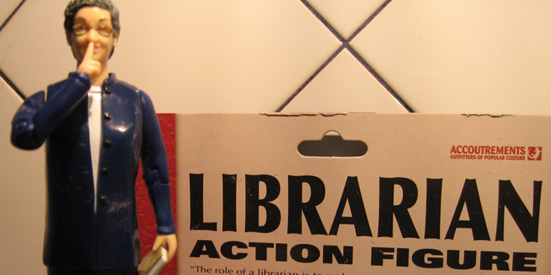
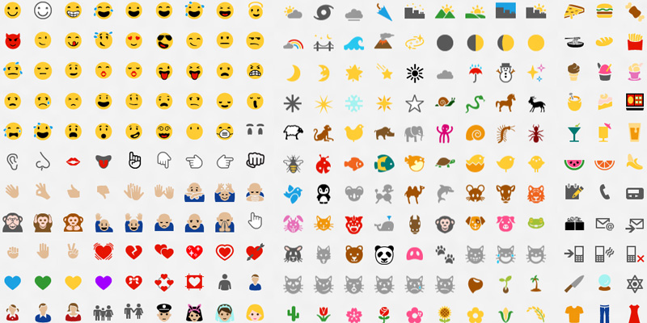
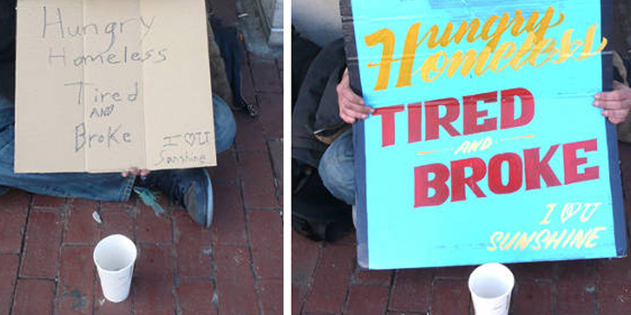
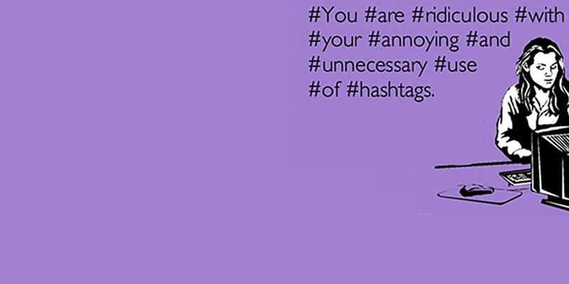

Never use WikiPedia
as my only source.
Never take pictures
of restaurant food.

Never use an emoticon.
Ever again.

Never ask for:
Likes, Retweets, Followers, Fans, or Upvotes.

#Never #Use
#Hashtags
#In #This #Way. #Period.